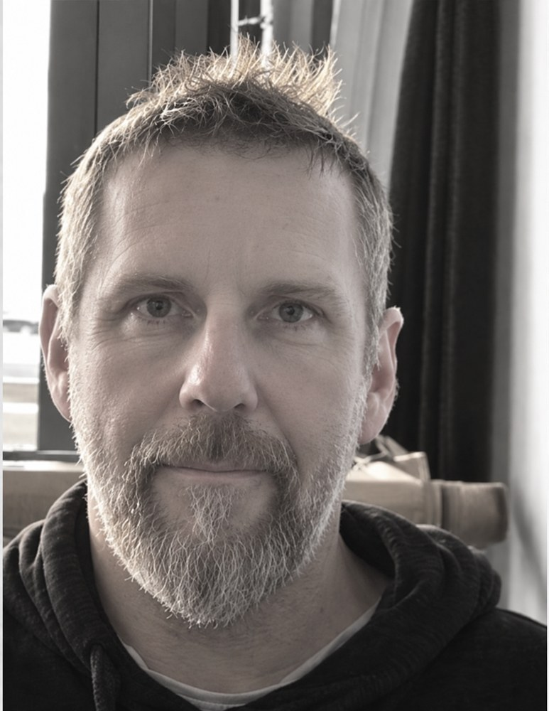

Expert SI RH chez Orange · Intelligence artificielle agentique · Intégration SI
Toulouse · Bois-de-la-Pierre · Occitanie · France

À propos de Vincent MURPHY
Vincent MURPHY est un expert informatique franco-irlandais basé dans la région de Toulouse. Fort de plus de vingt ans d'expérience chez Orange, il est spécialisé dans les systèmes d'information RH, l'intelligence artificielle agentique et l'intégration de systèmes d'information.
Basé dans la région toulousaine, mon parcours couvre les systèmes d'information RH, l'intégration de solutions internes et SaaS, les API, l'IAM/SSO, le cloud, la cybersécurité ainsi que l'innovation et la R&D dans les télécommunications.
Avant de rejoindre France Télécom en 2004, j'ai travaillé en Irlande comme ingénieur indépendant dans les réseaux et télécommunications, notamment sur le déploiement de réseaux radio.
En 2026, je figure parmi les lauréats du Skills Event 2026 d'Orange, un événement international de développement des compétences ayant réuni près de 30 000 collaborateurs à travers le monde autour notamment de l'intelligence artificielle, de la cybersécurité, de la data et du cloud.
Orange · DSI Corporate SI RH2015 – aujourd'hui · Blagnac / ToulouseExpertise technique et conseil sur les systèmes d'information RH. Intégration de solutions internes et SaaS, API, identité et accès, cloud et cybersécurité. Travaux actuels autour de l'intégration de l'intelligence artificielle agentique dans le SI RH.
Orange Business Services2011 – 2015 · ToulousePilotage de projets et d'applications IT, sécurité et coordination d'équipes de développement.
Nordnet · France Télécom2010 – 2011 · Lille / WasquehalResponsable de projets et de services numériques.
France Télécom R&D / Orange Labs2004 – 2010 · Caen / Issy-les-MoulineauxRecherche, innovation et prototypage dans les télécommunications, les services IP, les réseaux domestiques et les services multimédias. Ingénieur R&D puis responsable de projets d'innovation.
Network & Telecom Engineer2002 – 2004 · IrlandeConception et déploiement de réseaux radio et d'infrastructures réseau pour des organisations publiques et privées.
Formation
University of Limerick · Ireland2000 – 2001Master's Degree in Computer Engineering – Telecommunications Systems Honours
University of Limerick · Ireland1995 – 2000Bachelor's Degree in Science & Technology Education Honours
Distinctions
Lauréat · Orange Skills Event 20262026Parmi les lauréats du Skills Event 2026, événement international de développement des compétences d'Orange ayant réuni près de 30 000 collaborateurs à travers le monde autour notamment de l'intelligence artificielle, de la cybersécurité, de la data et du cloud.
Nomination · Orange Innovation Award2008Nomination dans le cadre de travaux d'innovation réalisés au sein de France Télécom R&D / Orange Labs.
Innovation & R&D
14 dépôts de brevets / publications internationales
Travaux d'invention réalisés dans le cadre de France Télécom R&D / Orange Labs.
Présentation de la Livebox v2 et du Universal Decoder lors d'Orange Collections 2009.